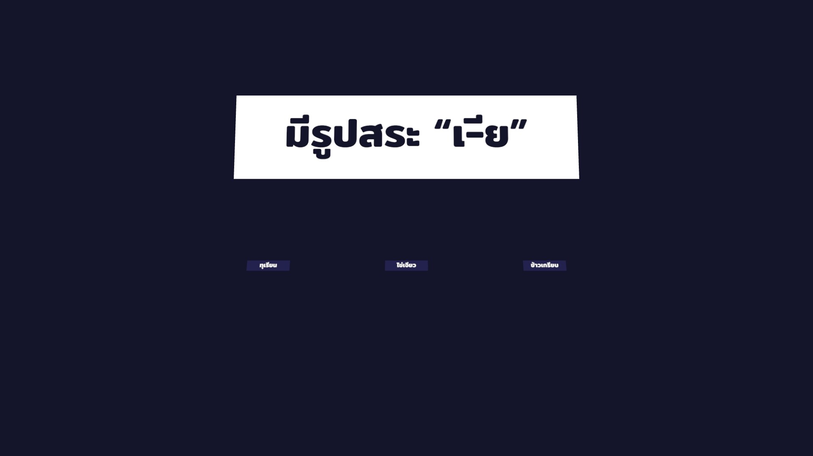
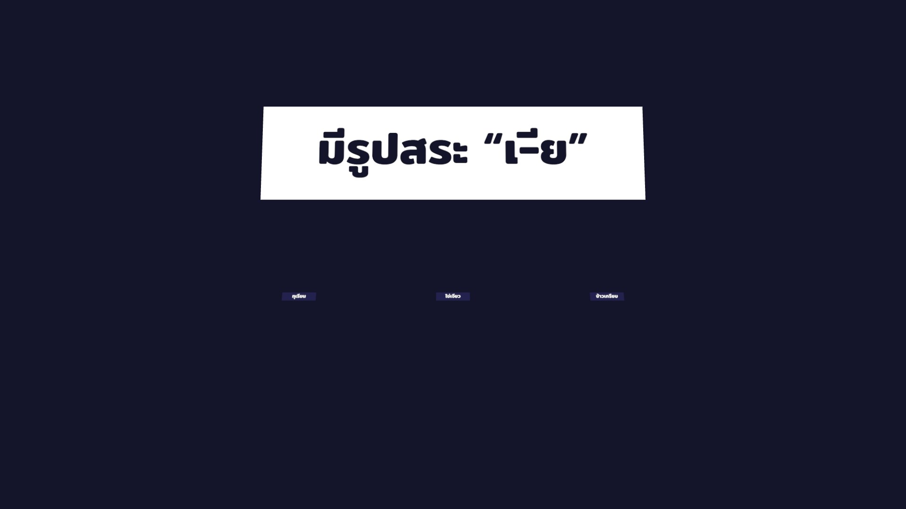

Shared rows (kit parameters) regenerate all seven boards when picked; pilot rows bind gh#326 only. Already ruled, not re-asked: 3D on the main screen (gh#299 decision 11), the never-blank 2D fallback (ADR-0051), half-cut word rounds and the 14-digit code (ADR-0080), picks changeable until the MC closes picking (gh#311, owner ruling 2026-11-19).
| decision | scope | A | B | status |
|---|---|---|---|---|
| D1 glyph floor on the densest projector screen (admin mode, 200 heads, a word beside every name) | SHARED (kit) · all seven boards | A ONE SCREEN AT 14PX: words and names at 14px = 1.30% of the screen height, all 200 cells on one screen (6 columns) | B TWO SCREENS AT 20PX: 20px = 1.85% of the screen height, 100 cells per screen, two screens in turn (4 columns) | D1 awaiting the owner on Gh326PickRule; drawn with the default A (ONE SCREEN AT 14PX) |
D2 vowel-form spelling in the condition label (conditions.ts มีรูปสระ “x”) | PILOT · gh#326 | A HYPHEN SLOT, AS STORED: the stored written-only form, a hyphen for the consonant slot: “เ-ีย”, “-ัว”, “-ิ” (default) | B อ IN THE SLOT: the same written-only marks with อ in the consonant slot: “เอีย”, “อัว”, “อิ” | awaiting the owner |
| D3 grouping of the 14-digit round code (ADR-0080 decision 2) | SHARED (kit) · all seven boards | A 4-4-4-2: the picked 12-digit 4-4-4 grouping plus a pair | B 5-5-4: three groups, as the 12-digit code has | D3 awaiting the owner on Gh326PickRule; drawn with the default A (4-4-4-2) |
Admin mode at the setup cap (MAX_HEADS = 200), round 1 of a half-cut word round (200 to 100, ADR-0080): every name with its dealt word beside it. Drawn at real projector pixels, no transform, so the floor is read off the frame as the room sees it. The word column holds the widest bank word (เครื่องปรับอากาศ, 7.29 em in Mitr 600, measured over all 923 bank words) at the floor: 109px in A, 153px in B. The widest name (WWWWWWWWWWWW) sits beside the widest food word in one cell. A Thai consonant body is 0.54 em in Mitr 600 (measured): 7.6px in A, 10.8px in B. Not offered: 30px (the board's own text floor) needs four screens of 50.
The condition label is conditions.ts conditionWording for the `vowels` family, มีรูปสระ “x”, with x the stored form (src/prize-words schema VOWEL_FORMS: written marks only, a hyphen for the consonant slot). A prints x as stored; B puts อ in the slot, the school-book way of naming a vowel form. Both keep to what is written (an unwritten inherent vowel is never named). The drawn rule here: rule 0, “เ-ีย”, match = survive; the other candidate is “-ัว”. Read off this render (2026-11-20, Mitr 600 in Chrome): neither option draws a dotted circle; in A a lone mark sits on the hyphen, so “-ิ” and “-ั” read close to a plain dash or an equals sign (table below), while B attaches every mark to a real consonant.
ปาร์ตี้ปีใหม่ 2570
กติกาบนจอ
บนจอขึ้นว่า
ปาร์ตี้ปีใหม่ 2570
กติกาบนจอ
บนจอขึ้นว่า
| stored form | -ิ | -ั | -ำ | เ-็ | -ัว | เ-ีย | แ- | -อ | เ-ือ |
|---|---|---|---|---|---|---|---|---|---|
| A as stored | -ิ | -ั | -ำ | เ-็ | -ัว | เ-ีย | แ- | -อ | เ-ือ |
| B อ in the slot | อิ | อั | อำ | เอ็ | อัว | เอีย | แอ | ออ | เอือ |
The code is real: 14 digits, seed 48215, cut 100, bank revision 1, kind 8 (game 1, Thai, vowels), pool food, format 0, Damm check over the round number and the payload (copied from round-code.ts / round.ts; the render re-checks the digits on the frame). 112px Mitr 700 in the gh#302 / gh#303 1500px code card.
Drawn with the kit defaults (D1 awaiting the owner on Gh326PickRule; drawn with the default A (ONE SCREEN AT 14PX); D2 A). The flip: cells turn row by row from the top; the turning row carries a gold edge (the 3D turn itself is motion, beat table). The result: passed cells gold with ink type, the rest dimmed and struck through, in words on the legend (never colour alone). The never-blank frame (WebGL unavailable, ADR-0051) draws the same judged field flat on the night ground, without the receding stage floor; reduced motion reaches the same frame by 200ms fades.
QR mode. The phone rebuilds its own hand from the 14-digit code before the rule (no server call at reveal, gh#299 decision 5); which rule was drawn, and the polarity, reach it only by the rule tap (round.ts RuleTap). Engine 2b: one hand of letters or words, two candidate scripts plus the same tap (ADR-0080 decision 1), so no phone holds the ending before the reveal. Real pixels at 320px, the site floor.
ปาร์ตี้ปีใหม่ 2570
รหัส 14 หลักที่ขึ้นบนจอใหญ่
ปาร์ตี้ปีใหม่ 2570
ทั้ง 3 คำมีผลเหมือนกัน เลือกคำที่ชอบ 1 คำ
รอพิธีกรจับกติกา
ปาร์ตี้ปีใหม่ 2570
กติกาที่คุณแตะ: มีรูปสระ “เ-ีย” · ตรงกติกา รอด
ปาร์ตี้ปีใหม่ 2570
กติกาที่คุณแตะ: มีรูปสระ “เ-ีย” · ตรงกติกา รอด
ปาร์ตี้ปีใหม่ 2570
รอคำปริศนาเปิดทีละตัวบนจอ
ปาร์ตี้ปีใหม่ 2570
ชุดคำปริศนา
บนจอขึ้นว่า
Players join by QR; each picks one word from a shared pool of up to 16 (the pick route caps options at 16) on a timer. A pick can be changed until the MC closes picking (owner ruling 2026-11-19); at close, whoever has not picked gets a random pick. The rule is drawn after the picks are stored; a rule that would leave nobody, everybody or fewer than the winner count is redrawn automatically. Rounds repeat until the MC-set number of winners (1-5) remains; drawn here with 3.
เลือกคำ ลุ้นกติกา
เปลี่ยนคำได้จนกว่าพิธีกรจะปิดรับ
เลือกคำ ลุ้นกติกา
คำของคุณในรอบนี้
รอพิธีกรจับกติกา
เลือกคำ ลุ้นกติกา
คุณไม่ได้เลือกทันเวลา ระบบสุ่มคำให้
รอพิธีกรจับกติกา
เลือกคำ ลุ้นกติกา
มีรูปสระ “เ-ีย” · ตรงกติกา รอด
รอรอบที่ 2
three 0.170.0 (the pinned package), headless Chrome with a live WebGL context asserted in the page. The hand of three words is drawn by the browser into a 2D canvas and applied as a texture on three tilted cards, sized so the untilted on-screen font is 1.06 x the D1 default floor (14px); the check reads the rendered ink of each word against the same word's 2D ink at the floor. Left, at the floor: 16 / 12 / 12px of ink against 15.51 / 11.58 / 11.58px (passes). Right, the must-red still at 0.75 x the floor: 12 / 9 / 9px (fails on every card). 1920x1080 at scale 1; open the files at full size.


Every frame value is a literal from tokens.css, a gh#302 / gh#303 pick, or a PROPOSAL named here.
| value | where | source |
|---|---|---|
| #14142b to #23214d, 180deg | night ground (projector and phone) | gh#302 B, picked 2026-11-11 |
| #23214d | cells, pool tiles, code card, word cards, winner cards | gh#302 B, picked |
| #ffffff / #d9d6f0 | primary / secondary text | tokens.css --ink-light / --ink-on-band-soft |
| #ffcc00 + 0 0 16..60px rgba(255,204,0,0.45) | words on the field, passed cells, counts, code digits, timer; gold glow | tokens.css --accent-gold; gh#302 B glow |
| #9a97c0 + line-through | a cell or tile that did not pass | gh#302 B, picked |
| #2e2b63 | the receding stage floor of the 3D intent (absent from the never-blank 2D frame) | gh#303 picked card-back hatch |
| 14px / 20px | D1: the glyph floor of words and names on the dense field (A one screen / B two screens) | PROPOSAL (this board) |
| word column = ceil(7.29 em x floor x 1.02) + 4px | holds the widest bank word (เครื่องปรับอากาศ) at the floor | PROPOSAL, measured 2026-11-20 |
| 112px Mitr 700, letter-spacing 6px | the 14-digit code (gh#303 drew 12 digits at 150px in the same 1500px card) | PROPOSAL |
| 96px Mitr 700 on #ffffff, 32px radius | the rule card condition | gh#303 picked rule card, sizes PROPOSAL |
| 320px, 16px floor | phone frames, real pixels | the gh305 audit probe phone branch (readable-font-size) |
| text / mark | on | ratio | use |
|---|---|---|---|
| #ffffff | #23214d | 15.04:1 | names on cells; white on pool tiles |
| #ffcc00 | #23214d | 9.95:1 | words on cells; code digits |
| #14142b | #ffcc00 | 11.93:1 | ink on passed cells |
| #9a97c0 | #14142b | 6.49:1 | a cell that did not pass (on the ground top) |
| #14142b | #ffffff | 18.03:1 | the rule condition |
| #3d3b5c | #ffffff | 10.61:1 | the rule card heading |
| #ffcc00 | #14142b | 11.93:1 | the polarity pill |
| #d9d6f0 | #23214d | 10.62:1 | secondary text on the phone |
Beat timing follows the gh#303 picked flip (600ms per turn); every beat has a reduced-motion form (ADR-0046: reduce, not remove).
| # | beat | time | what moves (3D intent) | reduced motion (ADR-0046: reduce, not remove) |
|---|---|---|---|---|
| 1 | the deal (admin mode) | held | the field of word cells settles onto the stage floor, a short drop per row | the field appears in place with one 200ms fade |
| 2 | polarity drawn | 1.2s | a pill spins to "ตรงกติกา รอด" or "ตรงกติกา ตก"; the MC can switch it before the rule draw | the pill fades in on its final value |
| 3 | rule drawn | 1.5s | the white rule card turns in over the veil and settles centre stage | the card fades in |
| 4 | flip | 600ms per row, rows overlap | cells turn row by row from the top; each row is judged as it lands | all cells change in place with one 200ms fade, then the judging fades in |
| 5 | result | held | passed cells glow; the count rolls to the keep | the count is shown at its final value |
Rule (the gh#302 picked boards' NAME FIT row, followed here): the limit is 12 grapheme clusters. A name is never clipped and never truncated. It renders at its surface's size; if the name plus 2% slack does not fit its box, it shrinks in 1px steps; at the floor it wraps onto a second line (overflow-wrap: anywhere), and every surface holds two lines at its floor (in the name fields the row that holds a wrapped name grows, and the render fails if the field overflows its box). Each floor is the smallest size at which the widest 12-base-letter names, WWWWWWWWWWWW and ฒฒฒฒฒฒฒฒฒฒฒฒ (U+0E12, the widest Thai letter), stay on one line, measured on this board's own frames. ฒำฒำฒำฒำฒำฒำฒำฒำฒำฒำฒำฒำ (U+0E12 U+0E33 x12: 12 clusters, SARA AM takes width, 58% wider) is drawn and is the case that wraps. All three are drawn among the joined names, the names dealt and the finalists. The render fails on a clip, a name that wraps above its floor or onto a third line, a one-line name without its slack, a name below its floor, or a field whose rows overflow it.
| surface | face | size | floor | box for the name | worst case lands at |
|---|---|---|---|---|---|
| dense field names (D1 A) | Sarabun 400 | 16px | 14px | a 6-column cell less the word column and padding | measured by the render (fit report) |
| dense field names (D1 B) | Sarabun 400 | 22px | 20px | a 4-column cell less the word column and padding | measured by the render (fit report) |
| mini-event winners | Mitr 700 | 64px | 40px | 1100px card less 80px padding | measured by the render |
| phone pool buttons (words, not names) | Mitr 600 | 20px | 16px | half the 288px column less 8px gap and 16px padding | measured by the render |
Strings in a frame: 54 distinct, plus 200 distinct sample names. Strings marked PROPOSED are new on this board and await the owner; picked gh#302 copy, the live phone copy and the provisional condition template are reused verbatim and marked. Bank words are data, not copy. None of the words gh#299 bars appears (the Thai scan checks the raw file and the rendered text).
| role | string | source |
|---|---|---|
| unit: people | คน | gh#302 picked board copy (B NIGHT STAGE, approved 2026-11-11) · verbatim |
| legend: passed | ผ่าน | gh#302 picked board copy (B NIGHT STAGE, approved 2026-11-11) · verbatim |
| legend: did not pass | ไม่ผ่าน | gh#302 picked board copy (B NIGHT STAGE, approved 2026-11-11) · verbatim |
| reveal: passed heading | ผ่านรอบที่ 1 | gh#302 picked board copy (B NIGHT STAGE, approved 2026-11-11) · verbatim |
| projector: round label | รอบที่ 1 จาก 4 | gh#302 picked board copy (B NIGHT STAGE, approved 2026-11-11) · verbatim |
| event name (typed by the MC) | ปาร์ตี้ปีใหม่ 2570 | sample data · not copy (stands in for what an MC or a player types) |
| game name | เลือกคำ ลุ้นกติกา | gh#311 / gh#326 body · owner wording, verbatim (the game name) |
| dense field: instruction (admin mode) | ดูคำข้างชื่อของคุณ | PROPOSED on this board · awaiting the owner |
| dense field: page indicator | หน้า 1 จาก 2 | PROPOSED on this board · awaiting the owner |
| rule card: heading | กติการอบนี้ | PROPOSED on this board · awaiting the owner |
| condition label, vowel family (A) | มีรูปสระ “เ-ีย” | src/prize-round/conditions.ts conditionWording, PROVISIONAL (gh#322; final wording is this canvas) · its template, verbatim |
| polarity: match = survive | ตรงกติกา รอด | PROPOSED on this board · awaiting the owner |
| polarity: match = out | ตรงกติกา ตก | PROPOSED on this board · awaiting the owner |
| condition label, vowel family (B) | มีรูปสระ “เอีย” | PROPOSED on this board · awaiting the owner |
| phone: rule tap heading | แตะกติกาที่ขึ้นบนจอ | PROPOSED on this board · awaiting the owner |
| phone: rule tap, which rule | กติกาบนจอ | PROPOSED on this board · awaiting the owner |
| condition label, vowel family (A) | มีรูปสระ “-ัว” | src/prize-round/conditions.ts conditionWording, PROVISIONAL (gh#322; final wording is this canvas) · its template, verbatim |
| phone: rule tap, which polarity | บนจอขึ้นว่า | PROPOSED on this board · awaiting the owner |
| phone: see the result | ดูผล | PROPOSED on this board · awaiting the owner |
| condition label, vowel family (B) | มีรูปสระ “อัว” | PROPOSED on this board · awaiting the owner |
| round code: label (round 1) | รหัสรอบที่ 1 | PROPOSED on this board · awaiting the owner |
| round code: instruction | ใส่รหัสนี้ในมือถือ เพื่อดูคำของคุณ | PROPOSED on this board · awaiting the owner |
| flip: status | กำลังเปิดผล | PROPOSED on this board · awaiting the owner |
| phone: code entry heading | ใส่รหัสรอบ | PROPOSED on this board · awaiting the owner |
| phone: code entry hint | รหัส 14 หลักที่ขึ้นบนจอใหญ่ | PROPOSED on this board · awaiting the owner |
| phone: see my words | ดูคำของฉัน | PROPOSED on this board · awaiting the owner |
| phone: hand heading | คำในมือคุณ | PROPOSED on this board · awaiting the owner |
| phone: hand, one fate | ทั้ง 3 คำมีผลเหมือนกัน เลือกคำที่ชอบ 1 คำ | PROPOSED on this board · awaiting the owner |
| phone: waiting for the rule | รอพิธีกรจับกติกา | PROPOSED on this board · awaiting the owner |
| phone: result heading | ผลรอบที่ 1 | PROPOSED on this board · awaiting the owner |
| phone: the rule tapped | กติกาที่คุณแตะ: | src/prize-join/reveal.ts live phone copy (the card round rule tap) · verbatim |
| kit 2b phone: hand heading | ตัวอักษรในมือคุณ | PROPOSED on this board · awaiting the owner |
| kit 2b phone: waiting for the script | รอคำปริศนาเปิดทีละตัวบนจอ | PROPOSED on this board · awaiting the owner |
| kit 2b phone: rule tap heading | แตะชุดที่ขึ้นบนจอ | PROPOSED on this board · awaiting the owner |
| kit 2b phone: which script | ชุดคำปริศนา | PROPOSED on this board · awaiting the owner |
| kit 2b phone: script 1 | ชุด ก | PROPOSED on this board · awaiting the owner |
| kit 2b phone: script 2 | ชุด ข | PROPOSED on this board · awaiting the owner |
| mini-event: round label | รอบที่ 1 | PROPOSED on this board · awaiting the owner |
| mini-event: pick instruction | เลือก 1 คำในมือถือของคุณ | PROPOSED on this board · awaiting the owner |
| mini-event: picks change until close | เปลี่ยนคำได้จนกว่าพิธีกรจะปิดรับ | PROPOSED on this board · awaiting the owner |
| mini-event: picked so far | เลือกแล้ว | PROPOSED on this board · awaiting the owner |
| mini-event: of N people | จาก 52 คน | PROPOSED on this board · awaiting the owner |
| mini-event: random fill | ใครไม่เลือก ระบบสุ่มคำให้ | PROPOSED on this board · awaiting the owner |
| mini-event: still in | เหลือ | PROPOSED on this board · awaiting the owner |
| mini-event: rounds repeat to the winner count | เล่นต่อจนเหลือผู้ชนะ 3 คน | PROPOSED on this board · awaiting the owner |
| mini-event: round label | รอบที่ 3 | PROPOSED on this board · awaiting the owner |
| mini-event: winners heading | ผู้ชนะ | PROPOSED on this board · awaiting the owner |
| mini-event: winner count | 3 คน | PROPOSED on this board · awaiting the owner |
| mini-event phone: pick heading | เลือก 1 คำ | PROPOSED on this board · awaiting the owner |
| mini-event phone: time left | เหลือเวลา | PROPOSED on this board · awaiting the owner |
| mini-event phone: picking closed | ปิดรับแล้ว | PROPOSED on this board · awaiting the owner |
| mini-event phone: your word this round | คำของคุณในรอบนี้ | PROPOSED on this board · awaiting the owner |
| mini-event phone: random fill | คุณไม่ได้เลือกทันเวลา ระบบสุ่มคำให้ | PROPOSED on this board · awaiting the owner |
| mini-event phone: waiting for round 2 | รอรอบที่ 2 | PROPOSED on this board · awaiting the owner |
| sample names (200) | ออม ท. · พลอย ส. · บีม ก. · นุ่น ท. · โอ๊ต ท. · WWWWWWWWWWWW · ฒฒฒฒฒฒฒฒฒฒฒฒ · ฒำฒำฒำฒำฒำฒำฒำฒำฒำฒำฒำฒำ … | sample data · not copy (stands in for what an MC or a player types); the gh#302 roster at 200, one name at the 12-cluster limit (มะปรางหวานใจ), plus the NAME FIT worst cases |
The board AWAITS the owner, so EVERY option's frames (A, B and the shared F) are held to these rows. Every element of a checked frame, and its ::before and ::after, renders each property only as the ONE row that owns that property for it: a property no row owns fails, a property two rows claim fails, a value its row does not list fails. The kit rows are shared by all seven boards; a board appends its own.
| role | elements (selector) | the only values they may render | source |
|---|---|---|---|
| night ground | .pj | background-image:linear-gradient(#14142b 0%, #23214d 100%) | tokens.css --color-line-strong to #23214d (gh#302 B PICKED 2026-11-11) |
| white labels | .pj :is(.dots .rl, .wc:not(.in):not(.out) .fit, .codebox .ci, .pt:not(.in):not(.out) .pw) | color:#ffffff | tokens.css --ink-light |
| secondary labels | .pj :is(.ev, .lk, .flow small, .codebox .ck), .pj :is(.lk, .codebox .ck) * | color:#d9d6f0 | tokens.css --ink-on-band-soft |
| gold figures | .pj :is(.gname, .digits, .flow .to, .wc:not(.in):not(.out) .wd, .timer, .win .fit) | color:#ffcc00 | tokens.css --accent-gold |
| glow on the gold counts | .pj :is(.flow .to, .timer) | text-shadow:rgba(255,204,0,0.45) 0px 0px 24px | gh#302 B PICKED 2026-11-11 |
| ink on gold | .pj :is(.wc.in .wd, .wc.in .fit, .wc.in .lg, .pt.in .pw), .pj .wc.in .lg * | color:#14142b | ink on gold |
| a cell that did not pass: type | .pj :is(.wc.out .wd, .wc.out .fit, .wc.out .lg, .pt.out .pw), .pj .wc.out .lg * | color:#9a97c0 | #9a97c0 (gh#302 B PICKED 2026-11-11) |
| round dot ring | .pj .dots i:not(.on) | border-width:3px border-color:#d9d6f0 | tokens.css --ink-on-band-soft |
| completed-round dot | .pj .dots i.done | background-color:#d9d6f0 | tokens.css --ink-on-band-soft |
| current-round dot | .pj .dots i.on | background-color:#ffcc00 border-width:3px border-color:#ffcc00 box-shadow:rgba(255,204,0,0.45) 0px 0px 18px 0px | tokens.css --accent-gold; glow (gh#302 B PICKED 2026-11-11) |
| round dot shape | .pj .dots i:not(.fin) | radius:50% | circle |
| final-round dot shape | .pj .dots i.fin | radius:999px | pill |
| cell and pool-tile shape | .pj .wc | radius:999px | pill (gh#302 B PICKED 2026-11-11 name pill) |
| cell | .pj .wc:not(.in):not(.out) | background-color:#23214d | #23214d (gh#302 B PICKED 2026-11-11) |
| passed cell or tile | .pj :is(.wc.in, .pt.in) | background-color:#ffcc00 box-shadow:rgba(255,204,0,0.45) 0px 0px 16px 0px | tokens.css --accent-gold; glow |
| cell or tile that did not pass | .pj :is(.wc.out, .pt.out) | box-shadow:#23214d 0px 0px 0px 2px inset | #9a97c0 type (gh#302 B PICKED 2026-11-11) |
| cell mid-turn (the 3D flip front) | .pj .wc.turn | box-shadow:#ffcc00 0px 0px 0px 3px inset | PROPOSAL; tokens.css --accent-gold edge |
| veil | .pj .veil | background-color:rgba(20,20,43,0.78) | gh#302 B PICKED 2026-11-11 |
| code card | .pj .codebox | background-color:#23214d border-width:3px border-color:#ffcc00 radius:24px box-shadow:rgba(255,204,0,0.45) 0px 0px 60px 0px | gh#302 B PICKED 2026-11-11 code card |
| rule card | .pj .rc | background-color:#ffffff radius:32px box-shadow:rgba(255,204,0,0.45) 0px 0px 60px 0px | gh#303 PICKED rule card (white face, 32px radius, gold glow) |
| rule card heading | .pj .rc .rh | color:#3d3b5c | tokens.css --ink-soft |
| rule card condition | .pj .rc .rv, .pj .rc .rv * | color:#14142b | tokens.css --color-line-strong |
| polarity pill | .pj .rc .pol | background-color:#14142b color:#ffcc00 radius:999px | PROPOSAL; tokens.css --color-line-strong, --accent-gold |
| stage floor (3D intent) | .pj svg.floor line | stroke:#2e2b63 | gh#303 PICKED hatch #2e2b63 |
| pool tile | .pj .pt | radius:24px | gh#302 B PICKED 2026-11-11 winner-card radius |
| pool tile surface | .pj .pt:not(.in):not(.out) | background-color:#23214d | #23214d (gh#302 B PICKED 2026-11-11) |
| winner card | .pj .win | background-color:#23214d radius:24px box-shadow:#ffcc00 0px 0px 0px 3px inset | gh#302 B PICKED 2026-11-11 winner card; gold edge |
| phone ground and edge | .pr | background-image:linear-gradient(#14142b 0%, #23214d 100%) box-shadow:#14142b 0px 0px 0px 1px | night ground (gh#302 B PICKED 2026-11-11); the 1px edge is annotation |
| phone secondary labels | .pr :is(.ev, .msg), .pr :is(.ev, .msg) * | color:#d9d6f0 | tokens.css --ink-on-band-soft |
| phone heading | .pr h2, .pr h2 * | color:#ffffff | tokens.css --ink-light |
| phone word card | .pr .hw:not(.on) | background-color:#23214d color:#ffffff radius:16px | #23214d (gh#302 B PICKED 2026-11-11); tokens.css --ink-light |
| phone word card picked | .pr .hw.on | background-color:#ffcc00 color:#14142b radius:16px box-shadow:rgba(255,204,0,0.45) 0px 0px 16px 0px | tokens.css --accent-gold; glow |
| phone letter tile | .pr .lt | background-color:#23214d color:#ffcc00 radius:16px box-shadow:#ffcc00 0px 0px 0px 3px inset | PROPOSAL; #23214d, tokens.css --accent-gold |
| phone choice | .pr .opt:not(.on), .pr .opt:not(.on) * | color:#ffffff | tokens.css --ink-light |
| phone choice ring | .pr .opt | box-shadow:#d9d6f0 0px 0px 0px 2px inset radius:16px | tokens.css --ink-on-band-soft ring (the demo count-button ring) |
| phone choice pressed | .pr .opt.on | background-color:#ffffff | the demo bar pressed paint (demo.css aria-pressed) |
| phone choice pressed type | .pr .opt.on, .pr .opt.on * | color:#14142b | tokens.css --color-line-strong |
| phone go button | .pr .go | background-color:#ffcc00 color:#14142b radius:999px | the demo go button (demo.css): tokens.css --accent-gold |
| phone verdict | .pr .big:not(.out) | color:#ffcc00 text-shadow:rgba(255,204,0,0.45) 0px 0px 24px | tokens.css --accent-gold; glow |
| phone verdict out | .pr .big.out | color:#9a97c0 | #9a97c0 (gh#302 B PICKED 2026-11-11) |
| phone code field | .pr .pfield | background-color:#23214d radius:16px box-shadow:#ffcc00 0px 0px 0px 2px inset | PROPOSAL; #23214d, tokens.css --accent-gold ring |
| phone code digits and pick timer | .pr :is(.pdig, .ptime .pt-n) | color:#ffcc00 | tokens.css --accent-gold |
| phone pool button | .pr .pb | radius:16px | PROPOSAL (the phone choice shape) |
| phone pool button ring | .pr .pb:not(.on) | box-shadow:#d9d6f0 0px 0px 0px 2px inset | tokens.css --ink-on-band-soft ring |
| phone pool button word | .pr .pb:not(.on) .fit | color:#ffffff | tokens.css --ink-light |
| phone pool button picked | .pr .pb.on | background-color:#ffcc00 | tokens.css --accent-gold |
| phone pool button picked word | .pr .pb.on .fit | color:#14142b | tokens.css --color-line-strong |
Rests on: gh#311 (the plan and the 2026-11-11 / 2026-11-19 owner rulings), gh#326 (game 1), ADR-0080 (half-cut, the 14-digit code), ADR-0076 and the picks design doc (the pick routes, 2-16 options, picks change until close), ADR-0051 (never-blank), gh#299 decision 11 (3D main screen) and its wording constraint, CONTEXT.md (company-party category).
Words are data from the bank at commit 50f74b7 (review pending, gh#321), frozen as literals on this board; none is read from src at generate time.
Not covered: a real projector, room or viewing distance; the 3D motion itself (frames are stills, beats are described); English rounds (same frames, bank English words; the language is the MC's per round); the MC's own controls (polarity switch, family pick) on the setup device; the phone pages at widths other than 320px.